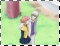

S A Y W H A T ? : Q U O T E SSasame doesn't have much funny moments, but he does have many poetic moments and advice moments.^^ I hope you like the quotes below as much as I do. :D
Episode 1:
SASAME: Are you alright?
HIMENO: *upside down on ground* Yeah...umm...! *jumps up* Yes!
SASAME: Ah, I see. Good.
HIMENO: *eye twitches*
Episode 2:
 HIMENO: Hey! Is there anyone here? No? Hey, Liefe Knights?!
SASAME: *twinkles windchime and drops close beside Himeno* You called?
HIMENO: *screams loudly and backs a mile away from him* XD
SASAME: Was it wrong for me to come?
HIMENO: *small embarrassed voice* No...It wasn't...
SASAME: *holds out hand* Give me your right hand.
HIMENO: *uncomfortable* Eh? W-with YOU?
SASAME: Exactly.
HIMENO: *gulps*
SASAME: My Liefe and your Liefe, to create a new power.
HIMENO: *turns redder at every word*
SASAME: Come, lets become one.
HIMENO: *twitches at the thought* *squeaks* O-one? *explodes pink cloud on top of head and falls over*
SASAME: You don't want me to...?
HIMENO: T-that's not it, I just need emotional preparation.
SASAME: Preparation?
HIMENO: Um, no...Never mind that...*coughs*
SASAME: Bring your two fingers to your lips. Now, blow strongly between them.
HIMENO: *blows hard and sends powerful vibrations across the pond* *Mayune sails into the bushes* Was that Mayune's voice?
SASAME: Perhaps it was a little too strong...
HIMENO: Huh? *sees wrecked pond* Oh!
HIMENO: A man should be gentle like you, Sasame.
SASAME: *leans close to Himeno* Is that so? I'm glad.
HIMENO: *stares at him with bulging eyes and edges away*
SASAME: Himeno?
HIMENO: I'm going to buy a drink!
SASAME: Ah, Himeno!
HIMENO: Trips over a bike rack and falls flat on her face*
SASAME: *runs over* Are you alright?
HIMENO: *huge bump on forehead* Oh, I'm just dandy.
Reproachful advice:SASAME: I see. You must have lost someone dear to you. I understand how you feel. I have also tasted of such hardship. But, I think you must have received much from someone so dear. Silk-san, if you do not admit this to yourself, those who are dear to your heart will come to mean nothing to you. So, if someone's precious to you, please don't erase them from your memory.
HIMENO: This kendama is meaningless, right?
SASAME: No, I don't think so. Since the kendama builds concentration, it's a good toy. *takes kendama and does it perfectly*
HIMENO: *stares in awe* *in dejected voice* Aw, how mortifying! You can do it so easily. I wonder if it's impossible after all...
SASAME: I don't think so. *leans close to Himeno again*
HIMENO: *jerks away with mouth wide open*
SASAME: Don't call something worthless just because you can't do it right away. You should have more confidence.
HIMENO: *blushing* ehe! You're right!
SASAME: A wounded heart can't be so easily healed. An open wound never closes, and the pain can never be fully suppressed.
SASAME: No matter how much you hurt other people, it won't heal the wound in your heart.
-----------------------------------------
Broken Echo is an AinoyumeNET production. Pretear was created by Kaori Naruse and Junichi Sato, © 2001. All rights reserved.